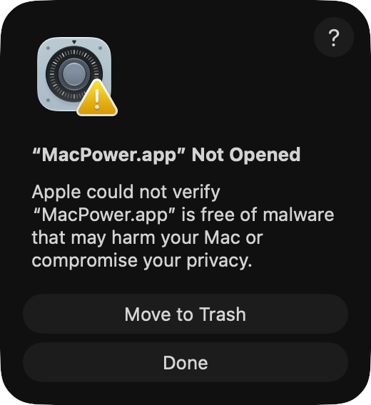
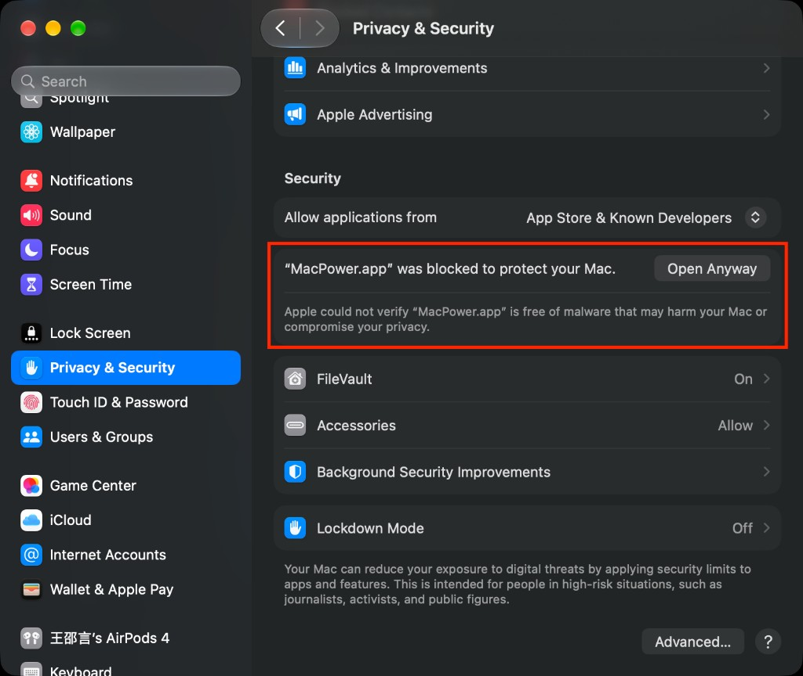

MacPower is a menu-bar battery monitor. It does not appear in the Dock. It requires macOS 14 or later and an Apple silicon MacBook with a battery.
The disk image is not notarized by Apple. I do not have an Apple Developer account, which costs 99 USD a year, so macOS blocks the first launch. This is not a virus. MacPower is open source. The code is in the repository, and a virus in it would be visible there.
MacPower-*.dmg in this folder and drag MacPower into Applications.
Open System Settings → Privacy & Security and scroll the page to the bottom of the Security section. When you see “MacPower.app” was blocked to protect your Mac, click Open Anyway and confirm the prompt.

Open Terminal, paste the command below, and press Enter. Nothing appears while you type the password. Press Enter when you finish:
sudo xattr -rd com.apple.quarantine /Applications/MacPower.appYou can skip the disk image and run this in Terminal instead:
brew install --cask --no-quarantine ryanstarfox/tap/macpower--no-quarantine is required. Official homebrew/cask does not accept this kind of package, so the command uses a personal tap.